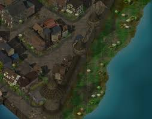

|

|
Inside the Blade and Stars Edit
Ground floor
G'axir the Seer wants a Sphene Gem to tell the player character's fortune; one may be found off the Basilisk in south Baldur's Gate.
Possible random loot locations for the Sphene gem include the Umberlee head priestess in that same area (verified possible but not
verified reliable, might be random loot).
Shaella - Something found in Candlekeep may trigger another response from her, the second time when she pretends to have another name.
Elkart tells everyone to bog off, but if Eldoth and Skie Silvershield (Not known if both characters are needed) are in the party, he can be blackmailed every twentyfour hours for 1000 GP each time. The eighth time he gives the money and a Flaming Fist guard appears, in BG:EE, he has Harrower, a +1 longsword +3 vs. undead.
Second floor
Lothander will be here until you give him the cure for his Geas (a common plot device in Gaelic fiction which means, a magical or moral
compulsion, and usually to perform a task).
Maple Willow Aspen, 2nd floor. Says, 'Eep.' and actually appears to blow up if you ask her if her parents were fond of trees.
Third floor
Reginald Worthington, 3rd floor.
|